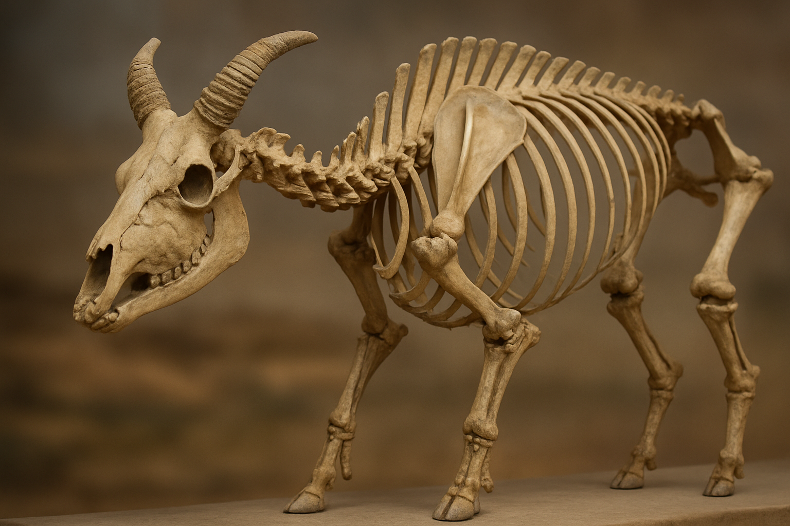
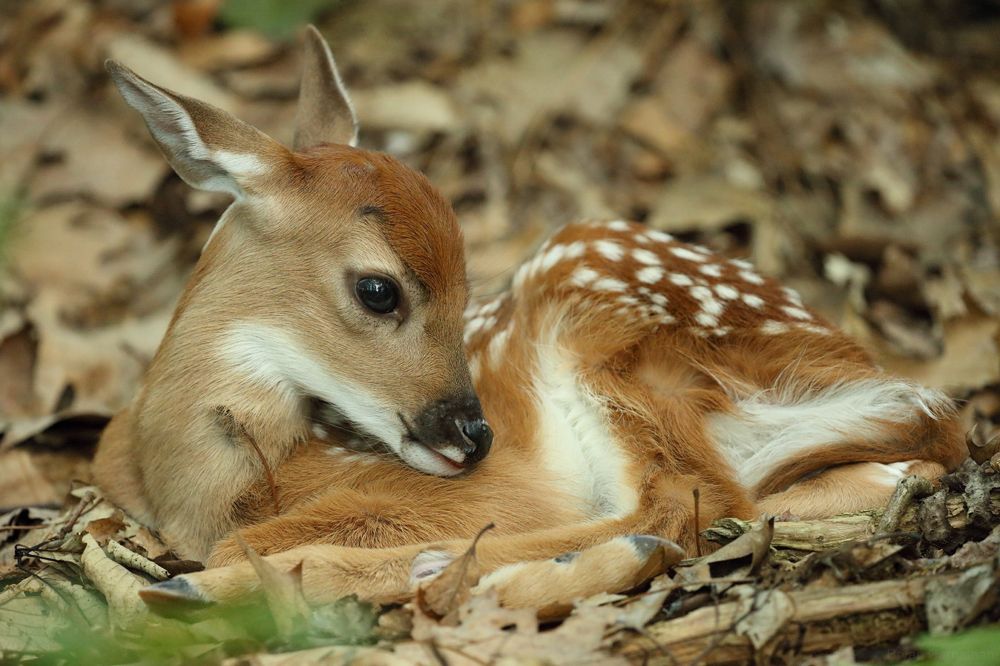
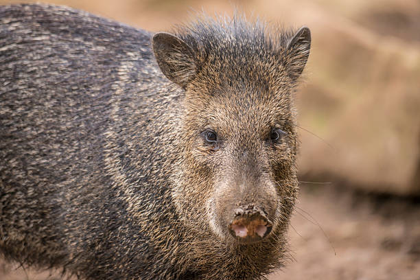
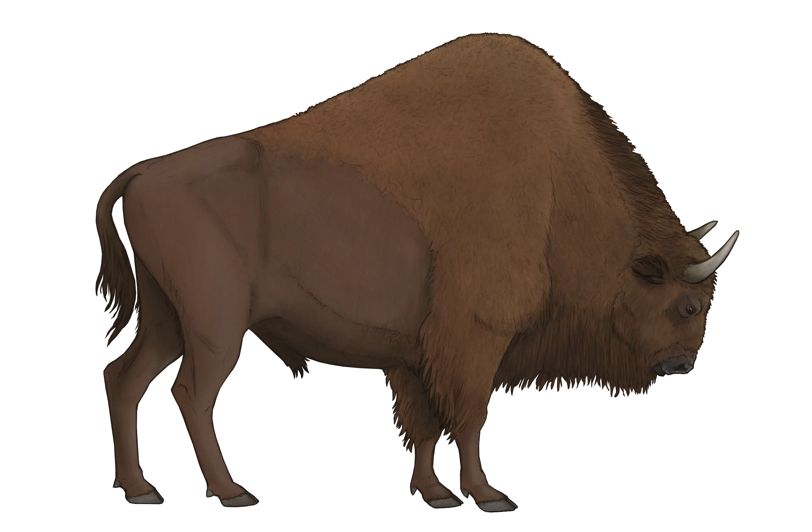
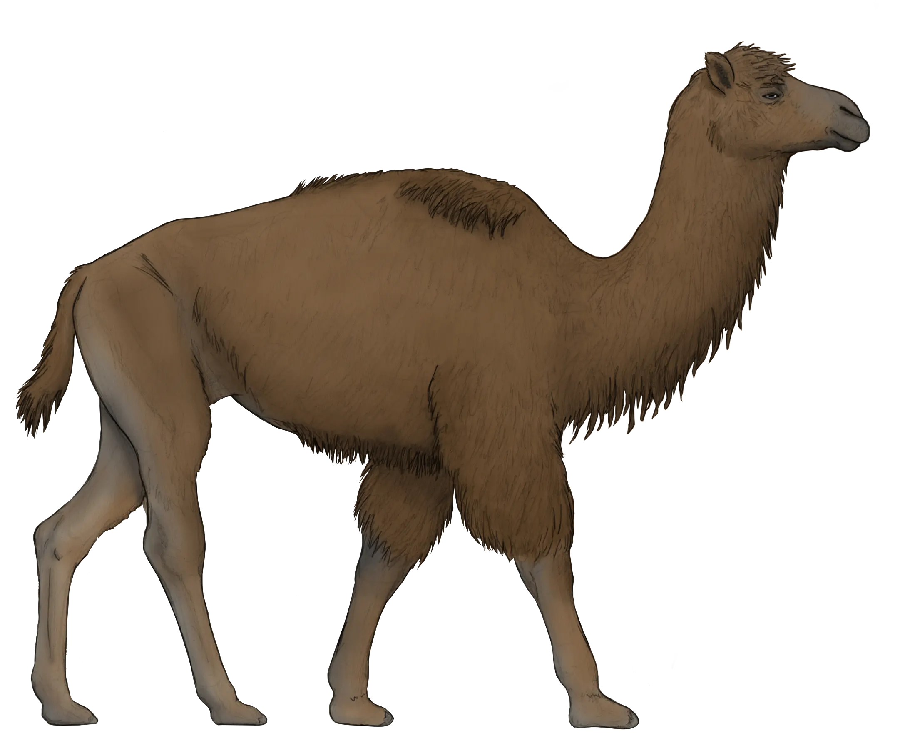

Museo de Paleontología SEMAHN
Inicio
Otras publicaciones
Museo De Paleontología SEMAHN
Inicio
Otras publicaciones
Astas, cuernos y pezuñas en el Nuevo Mundo
Es el orden vivo más grande de mamíferos terrestres ungulados. Se les conoce como artiodáctilos de dedos pares, ya que el eje de simetría del pie se extiende entre el tercer y el cuarto dedo, por lo que suelen tener dos o cuatro. Hoy en día, son los ungulados más diversos y abundantes del planeta, con más de 190 especies vivientes que se distribuyen por todo el mundo, a excepción de la Antártida y Australia. En este orden se agrupan los cerdos, pecaríes, hipopótamos, camellos, llamas, ciervos, berrendos, jirafas, ovejas, cabras, búfalos y antílopes.

Los primeros artiodáctilos aparecieron en Europa hace unos 55 millones de años, durante el Eoceno temprano, siendo el taxón más primitivo Diacodexis. En América del Norte los artiodáctilos fueron raros en las faunas del Eoceno temprano, pero son mucho más diversos durante el Eoceno medio.
El registro fósil de Artiodactyla en el Pleistoceno de Chiapas incluye al camello Camelops hesternus , a la llama Palaeolama mirifica, al bisonte Bison antiquus, al venado cola blanca Odocoileus virginianus y al pecarí de collar Dicotyles tajacu.
Esta clasificación se basa en el análisis de Spaulding et al., 2009 y las familias actuales reconocidas en la obra Mammal Species of the World publicada en 2005.Actualmente, los cetáceos y los artiodáctilos han sido situados en Cetartiodactyla como grupos hermanos, aunque el análisis de ADN ha mostrado que de hecho los cetáceos evolucionaron directamente de los Artiodactyla, por lo que deben incluirse en este orden. Cetartiodactyla es sinónimo de Artiodactyla. La teoría más reciente de los orígenes de la familia Hippopotamidae sugiere que los hipopótamos y ballenas comparten un ancestro común semiacuático que divergió de los otros artiodáctilos hace cerca de 60 millones de años.Este grupo ancestral hipotético probablemente se dividió en dos ramas hace unos 54 millones de años.Una de estas ramas evolucionaría en los cetáceos, posiblemente iniciando con la protoballena Pakicetus hace 52 millones de años, junto con otras ballenas primitivas conocidas colectivamente como los Archaeoceti, las cuales finalmente desarrollarían adaptaciones hacia la vida completamente acuática que tienen los cetáceos modernos.
Venado de tamaño mediano, que puede alcanzar hasta 3.30 m de largo, 1.20 m hasta los hombros y 140 kg de peso. Habita bordes y claros de bosques, orillas de pantanos, riberas de arroyos, praderas con matorrales, zonas abiertas con matorrales. Se alimenta de pasto, hojas, hierbas, acículas, frutos, herbáceas, brotes, ramitas de arbustos y árboles, y setas.
Su registro fósil en México es escaso y sólo se conocen restos de esta especie en Chihuahua, Jalisco, San Luis Potosí, Estado de México, Puebla, Yucatán y Chiapas; para este último estado se han recuperado gran cantidad de astas y algunos huesos poscraneales en el municipio de Villaflores.


Durante el Pleistoceno, habitaron en América del Norte varias especies de pecaríes. Una de ellas fue el pecarí de collar (Dicotyles tajacu), la cual aún existe hasta nuestros días. Su registro fósil es escaso en México y sólo ha sido documentado para la región central de Chiapas y para las grutas sumergidas que se ubican en Yucatán y Quintana Roo.
Su presencia en el Pleistoceno tardío de Chiapas se basa en la mitad de un húmero izquierdo recolectado en el municipio de Villaflores
El Bisonte Americano de las planicies, es el mamífero terrestre más grande del continente, estuvo presente en las grandes planicies de Canadá, Estados Unidos de América y México. El bisonte es un animal adaptado a los pastizales, que por miles de años estableció interacciones estrechas con plantas, otros animales y ejerció tal impacto que llegó a ser una especie clave en las planicies norteamericanas. Los bisontes tienen un pelaje de color marrón oscuro durante el invierno, y uno más liviano de color marrón claro durante el verano. Llegan a medir hasta 1,60m de alto y 3m de largo, y pesan de 450 a 1350Kg. Tando el macho como la hembra tienen pequeños cuernos curvos, los cuales usan para luchar en época de celo y como defensa.


Camelops es un género extinto de mamíferos artiodáctilos de la familia de los camélidos, propio del oeste de Norteamérica, de donde desapareció al final del Pleistoceno hace unos 10,000 años. El Camelops hesternus tenía un tamaño máximo de un poco más alto que el camello bactriano de la actualidad. Restos de pastos y otras plantas encontradas en su dentadura sugiere que este animal comía cualquier hierba disponible, de la forma en que lo hacen los camellos actuales.
Carbot-Chanona, G. y Gómez-Pérez, L.E. (2023). First record of the collared peccary Dicotyles tajacu (Artiodactyla, Tayassuidae), in the Gliptodonte locality, Villaflores municipality, Chiapas. Paleontología Mexicana, 12(2): 53-62.
Long, J.L. (2003). Introduced mammals of the World: their history, distribution and influence. CSIRO Publishing, Australia, 589 pp.
Montellano-Ballesteros, M. y Carbot-Chanona, G. (2010). Presencia de Odocoileus (Artiodactyla, Cervidae) en el Pleistoceno de Chiapas, México. En: Fernando A. Cervantes, Julieta Vargas-Cuenca y Yolanda Hortelano-Moncada (eds.). 60 años de la Colección Nacional de Mamíferos del Instituto de Biología, UNAM. Aportaciones al Conocimiento y Conservación de los Mamíferos Mexicanos. Universidad Nacional Autónoma de México, pp. 291-298.
Prothero, D.R. y Foss, S.E. (2007). The evolution of artiodactyls. The Johns Hopkins University Press, Maryland, Baltimore, 367 pp.